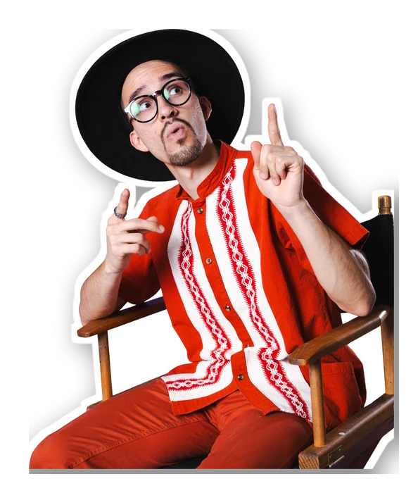

Crea tu CV
Con lo que ya nos contaste armamos tu ficha técnica. Elige la plantilla que más te represente y agrega tu foto.
Que sea un close-up de tu rostro.
Formato vertical 4:5 — se acomoda completa y sin recortes en las tres plantillas.
Actriz de dramática-comedia radicada en Ciudad de México, con 8 años de experiencia en cine, TV y teatro. Bilingüe (español/inglés), con formación en canto y danza.
| 2022 | "Después del Silencio" — rol secundario |
| 2021 | "Fin de Semana" — protagónico |
| 2021 | "Vecinos" (TV) — participación especial |
| 2020 | "La Rosa de Guadalupe" (TV) — antagonista |
| 2019 | "La Otra Orilla" — reparto |
| 2019 | "La Casa de Bernarda Alba" |
| 2018 | "Bodas de Sangre" |
| 2017 | "Un Tranvía Llamado Deseo" |
Actriz de dramática-comedia radicada en Ciudad de México, con 8 años de experiencia en cine, TV y teatro. Bilingüe (español/inglés), con formación en canto y danza.
CasAzul — Diploma actoral, 4 años.
Taller actual con Sharon (EL LLAMADO).
- Selección oficial, Festival de Morelia — "Después del Silencio"
- Campaña nacional Telcel (2023)
- 8 años de trayectoria continua en cine, TV y teatro
Actriz mexicana especializada en dramática y comedia. 8 años de trayectoria en cine, TV y teatro, con formación en canto, danza y acentos.
CasAzul, 4 años
Taller con Sharon (EL LLAMADO)
8 años de experiencia
Estatura: 165 cm
Complexión: Media
Ojos: Café · Cabello: Castaño
Rango de edad: 25–35
Edita tu CV
Así se va a ver tu CV. Toca cualquier texto para corregirlo antes de confirmar.
✎ Toca el texto que quieras cambiar — se guarda solo
Tu CV se va a generar con esta información.
Revísala bien antes de continuar.
Ya tienes tu CV.
¿Ahora qué hacemos?
Y eso es justo lo que resolvemos en Monty Experience: una experiencia personalizada para actores, donde no solo tomamos fotos bonitas, sino que armamos una estrategia clara — muy tú, y con muchos huevos.
Agendemos un cafecito y platiquemos dónde estás parado. Sin compromisos.
